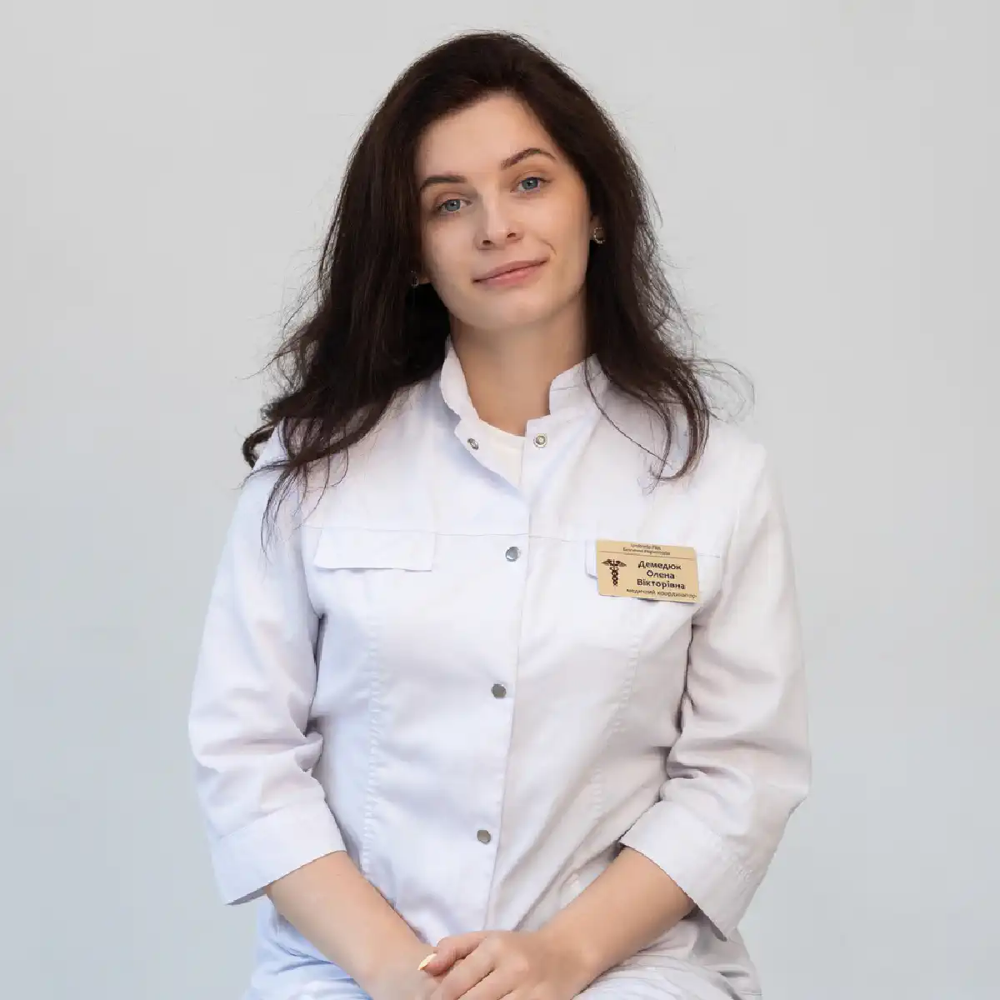

+38(068) 79 72 782
+38(068) 79 72 782Лечение пивного алкоголизма Киев
Трезвость без компромиссов


Бесплатная консультация, работаем круглосуточно 24/7
Трезвость без компромиссов

Пивной алкоголизм часто воспринимается как «легкая» форма зависимости, поскольку пиво считается менее крепким напитком. Однако регулярное употребление даже слабоалкогольных напитков формирует устойчивую психологическую и физическую зависимость. Лечение пивного алкоголизма в Киеве требует комплексного медицинского подхода, включающего детоксикацию, медикаментозную терапию и психотерапевтическую поддержку.
Главная проблема пивной зависимости заключается в её постепенном формировании. В отличие от крепкого алкоголя, пиво часто становится частью повседневного ритуала: «для расслабления», «после работы», «под просмотр фильма» или «в компании друзей». Постепенно такие эпизоды становятся регулярными, увеличивается объём употребления, а без привычной дозы появляется раздражительность, тревожность или ощущение внутреннего дискомфорта. Со временем развивается толерантность — прежнее количество напитка уже не даёт желаемого эффекта, и человек увеличивает дозу. Это приводит к постоянной токсической нагрузке на организм. Несмотря на меньшую крепость, при ежедневном употреблении суммарное количество этанола может быть сопоставимо с приёмом крепких напитков.
Пивной алкоголизм нередко сопровождается скрытым течением. Человек продолжает работать, выполнять социальные обязанности, поэтому проблема долго остаётся незамеченной. Однако внутри организма уже происходят серьёзные изменения: нарушается работа печени, страдает сердечно-сосудистая система, меняется гормональный фон, повышается риск ожирения и метаболических расстройств. Формирование физической зависимости проявляется абстинентными симптомами: утренней слабостью, головной болью, тремором, нарушением сна. Попытки «снять напряжение» новой дозой алкоголя постепенно формируют замкнутый круг. На этом этапе самостоятельный отказ от пива становится сложным, и требуется профессиональная медицинская помощь.
Комплексное лечение пивного алкоголизма включает несколько этапов. В первую очередь проводится оценка состояния пациента: определяется степень интоксикации, наличие сопутствующих заболеваний, уровень мотивации к лечению. Далее осуществляется детоксикация — восстановление водно-электролитного баланса, снижение токсической нагрузки и стабилизация общего состояния. После снятия острой симптоматики важным этапом становится медикаментозная поддержка, направленная на снижение тяги к алкоголю и нормализацию эмоционального состояния. Не менее значимую роль играет психотерапия, поскольку именно психологические механизмы поддерживают привычку к регулярному употреблению. Работа со специалистом помогает выявить триггеры, сформировать новые стратегии поведения и укрепить установку на трезвость.
Основная опасность пивной зависимости заключается в её постепенном и незаметном развитии. Человек может годами употреблять пиво ежедневно, не считая это проблемой. Формируется устойчивый поведенческий стереотип: вечер без пива начинает восприниматься как «неполноценный отдых». При этом развивается толерантность — для достижения прежнего расслабляющего эффекта требуется всё больший объём напитка. Если раньше хватало одной бутылки, со временем это может быть несколько литров в день.
Постепенно меняется и психологическое состояние. Без привычной дозы появляется раздражительность, тревожность, снижение настроения. Пиво начинает использоваться как способ снятия стресса, борьбы с усталостью или бессонницей. На этом этапе формируется психологическая зависимость, которая со временем дополняется физической. Важно учитывать, что пиво содержит не только этанол, но и вещества, способные влиять на гормональный баланс. Регулярное употребление может приводить к увеличению массы тела, нарушению углеводного и жирового обмена, формированию абдоминального ожирения. У мужчин возможно снижение уровня тестостерона, что проявляется уменьшением мышечной массы, снижением либидо и изменением распределения жировой ткани.
Постоянная нагрузка на сердечно-сосудистую систему способствует развитию артериальной гипертензии, тахикардии и кардиомиопатии. Большой объём жидкости увеличивает объём циркулирующей крови, создавая дополнительную нагрузку на миокард. Печень при этом ежедневно перерабатывает этанол, что может приводить к жировой дистрофии, воспалительным изменениям и постепенному формированию фиброза.
На ранней стадии человек употребляет пиво регулярно, чаще всего оправдывая это необходимостью расслабиться после работы или снять стресс. Употребление постепенно становится частью повседневного ритуала. Сначала это может быть одна–две бутылки вечером, но со временем объём увеличивается. Появляется раздражительность или внутренний дискомфорт, если по каким-то причинам алкоголь недоступен. Уже на этом этапе формируется психологическая зависимость: пиво воспринимается как обязательный способ отдыха и восстановления эмоционального равновесия.
На второй стадии развивается физическая зависимость. Организм привыкает к постоянному поступлению этанола, и при его отсутствии возникают симптомы абстиненции: утренняя слабость, головная боль, сухость во рту, тремор, повышенная потливость, тревожность. Ухудшается сон — появляются ночные пробуждения, поверхностный сон, ощущение разбитости утром. Снижается работоспособность, ухудшается концентрация внимания, повышается утомляемость. Человек может начинать употреблять пиво уже в первой половине дня, чтобы «нормализовать состояние», что свидетельствует о формировании устойчивой физической зависимости.
Третья стадия характеризуется выраженной деградацией физического и психического состояния. Появляются запои, при которых употребление продолжается несколько дней подряд. Развиваются серьёзные нарушения со стороны печени (жировая дистрофия, гепатит), сердечно-сосудистой системы (гипертония, аритмии, кардиомиопатия), нервной системы (депрессия, тревожные расстройства, когнитивные нарушения). Нарушается социальная адаптация: страдают семейные отношения, снижается профессиональная эффективность, возможны конфликты и изоляция. На этом этапе зависимость требует обязательного медицинского вмешательства, поскольку самостоятельный отказ от алкоголя становится крайне затруднительным.
Пивной алкоголизм чаще развивается медленно и сопровождается употреблением больших объёмов жидкости. В отличие от крепкого алкоголя, пиво редко вызывает быстрое выраженное опьянение, поэтому человек может выпивать литры напитка за вечер, не ощущая критического ухудшения состояния. Однако именно большие объёмы жидкости создают дополнительную нагрузку на почки и сердечно-сосудистую систему.
Увеличивается объём циркулирующей крови, возрастает нагрузка на миокард, что со временем может способствовать развитию гипертонии, тахикардии и так называемой «пивной кардиомиопатии». Почки вынуждены работать в усиленном режиме, чтобы выводить избыточную жидкость и продукты распада этанола. При длительном употреблении это может приводить к нарушениям водно-электролитного баланса и отёкам.
Кроме того, из-за меньшей крепости напитка человек склонен воспринимать пиво как безопасное и употреблять его ежедневно. Даже если доза этанола в одной порции ниже, при регулярном приёме формируется постоянная токсическая нагрузка на организм. Печень ежедневно перерабатывает алкоголь, что увеличивает риск жировой дистрофии, воспалительных изменений и последующего фиброза. Постоянное присутствие этанола в крови нарушает работу нервной системы, ухудшает сон, влияет на гормональный фон и обмен веществ. Таким образом, ежедневное употребление пива поддерживает хроническое состояние интоксикации, которое постепенно приводит к системным нарушениям и формированию устойчивой зависимости.
Детоксикация — первый и один из наиболее важных этапов лечения пивного алкоголизма. Она направлена на снижение токсической нагрузки на организм, выведение продуктов распада этанола, восстановление водно-электролитного баланса, стабилизацию артериального давления и сердечного ритма. Даже при употреблении пива в больших объёмах формируется хроническая интоксикация, которая требует медицинской коррекции.
Перед началом терапии врач проводит осмотр пациента: оценивает уровень сознания, частоту пульса, показатели давления, состояние дыхания, наличие отёков, выраженность абстинентного синдрома. При необходимости уточняется наличие сопутствующих заболеваний — гипертонии, нарушений ритма сердца, проблем с печенью или почками. На основе оценки состояния подбирается индивидуальная инфузионная терапия. В состав капельниц могут входить растворы для регидратации, препараты для поддержки сердечно-сосудистой системы, средства для коррекции электролитных нарушений, витамины группы B, антиоксиданты и препараты для снижения тревожности. Цель терапии — не просто «снять похмелье», а стабилизировать внутреннюю среду организма и предотвратить осложнения.
Детоксикация особенно важна при выраженной интоксикации, тахикардии, скачках давления, выраженной слабости, нарушениях сна и тревожности. При пивной зависимости часто наблюдается задержка жидкости и электролитный дисбаланс, что требует аккуратной и контролируемой коррекции. Своевременно проведённая детоксикация позволяет безопасно вывести пациента из состояния абстиненции, улучшить самочувствие и подготовить организм к следующему этапу лечения — медикаментозной и психотерапевтической работе, направленной на снижение тяги к алкоголю и формирование устойчивой ремиссии.
Стоимость капельницы от алкоголя при пивной интоксикации в Киеве начинается от 2700 грн.
| Популярные услуги | Цена |
|---|---|
| Нарколог Киев | От 1500 грн |
| Капельница от алкоголя | От 2700 грн |
| Вывод из запоя на дому | От 3000 грн |
| Кодирование от алкоголизма | От 6000 грн |
Регулярное употребление пива повышает нагрузку на миокард и сердечно-сосудистую систему в целом. Большой объём жидкости увеличивает объём циркулирующей крови, что заставляет сердце работать с повышенной нагрузкой. Со временем это может приводить к развитию артериальной гипертензии, тахикардии и нарушениям ритма. У некоторых пациентов формируется так называемая алкогольная или «пивная» кардиомиопатия — состояние, при котором сократительная функция миокарда снижается, появляется одышка, быстрая утомляемость, отёки.
Печень также испытывает постоянную токсическую нагрузку. Даже при употреблении слабоалкогольных напитков этанол ежедневно поступает в организм и перерабатывается гепатоцитами. При длительном употреблении развивается жировая дистрофия печени (стеатоз), которая может прогрессировать до алкогольного гепатита и фиброза. Без своевременного лечения патологический процесс способен перейти в цирроз, сопровождающийся выраженным нарушением функции органа.
Гормональные изменения являются ещё одним важным последствием пивной зависимости. Пиво содержит вещества, влияющие на эндокринную систему. У мужчин может снижаться уровень тестостерона, что проявляется уменьшением мышечной массы, увеличением жировых отложений по абдоминальному типу, снижением либидо и общей выносливости. Нарушения обмена веществ способствуют развитию метаболического синдрома: увеличивается масса тела, повышается уровень глюкозы и холестерина, возрастает риск сахарного диабета и сердечно-сосудистых заболеваний. Таким образом, регулярное употребление пива оказывает комплексное негативное влияние на сердце, печень и гормональную систему, формируя основу для серьёзных хронических патологий.
После проведения детоксикации лечение не заканчивается. Следующим этапом становится медикаментозная поддержка, направленная на снижение патологической тяги к алкоголю, стабилизацию сна, нормализацию эмоционального фона и восстановление работы нервной системы. При пивной зависимости часто сохраняются тревожность, раздражительность, перепады настроения, бессонница. Эти симптомы повышают риск срыва, поэтому важно не игнорировать их, а корректировать под контролем врача. Препараты подбираются индивидуально — с учетом возраста пациента, длительности употребления, состояния печени, сердечно-сосудистой системы и наличия сопутствующих заболеваний.
Медикаментозная терапия может включать средства, снижающие влечение к алкоголю, препараты для нормализации сна, а также средства, поддерживающие работу печени и нервной системы. При необходимости назначаются препараты для коррекции тревожных или депрессивных состояний. Важно подчеркнуть, что самостоятельный прием лекарств недопустим. Некоторые препараты требуют полного отказа от алкоголя и строгого медицинского контроля. Неправильная комбинация медикаментов и спиртного может быть опасной для здоровья. Комплексный подход — детоксикация, медикаментозная поддержка и психотерапия — значительно повышает шансы на формирование устойчивой ремиссии и предотвращение повторных эпизодов употребления.
Без работы с психологическими причинами зависимость имеет высокий риск рецидива. Даже после успешной детоксикации и медикаментозной поддержки остаются поведенческие установки, привычные реакции на стресс и эмоциональные триггеры, которые ранее «гасились» употреблением алкоголя. Если их не проработать, человек может вновь вернуться к привычной модели поведения при первых же трудностях. Психотерапия помогает выявить триггеры употребления — это могут быть стрессовые ситуации, конфликты, усталость, чувство одиночества или привычные социальные сценарии. Специалист помогает пациенту осознать связь между эмоциями и употреблением, научиться распознавать ранние сигналы напряжения и реагировать на них иначе.
В ходе терапии формируются новые стратегии поведения: навыки управления стрессом, развитие эмоциональной устойчивости, умение говорить «нет», планирование досуга без алкоголя. Также важным элементом является укрепление внутренней мотивации к трезвости — переход от внешнего давления («надо лечиться») к личному выбору («я хочу сохранить здоровье и изменить жизнь»). Регулярная психотерапевтическая поддержка снижает вероятность срывов, помогает восстановить самооценку и выстроить долгосрочную стратегию жизни без алкоголя. Именно сочетание медицинской помощи и психологической работы делает лечение пивной зависимости более устойчивым и результативным.
Кодирование может применяться как часть комплексной программы лечения пивной зависимости и рассматривается не как самостоятельный метод, а как дополнительный инструмент в системе терапии. Решение о его проведении принимается врачом после тщательной оценки состояния пациента, анализа длительности употребления, наличия сопутствующих заболеваний и уровня мотивации к трезвости. Существуют разные методы кодирования — медикаментозные и психотерапевтические. Медикаментозные способы основаны на формировании негативной реакции организма на алкоголь или снижении тяги к нему. Психотерапевтические методы направлены на формирование устойчивой установки на отказ от употребления. Выбор конкретного подхода зависит от клинической ситуации и индивидуальных особенностей пациента.
Перед проведением процедуры обязательно требуется период воздержания от алкоголя. Это необходимо для снижения риска осложнений и объективной оценки состояния организма. Врач также подробно информирует пациента о механизме действия метода, возможных реакциях и условиях соблюдения трезвости. Кодирование проводится только при добровольном и информированном согласии. Кодирование эффективно при наличии внутренней готовности к лечению. Без психотерапевтической поддержки и работы с причинами зависимости риск рецидива сохраняется. Поэтому наилучший результат достигается при сочетании кодирования с медикаментозной терапией, психологической помощью и последующей реабилитацией.
Реабилитационный этап является ключевым звеном в лечении пивной зависимости, поскольку именно на этом этапе формируется устойчивый трезвый образ жизни. После детоксикации и стабилизации состояния важно не только сохранить результат, но и изменить поведенческие и социальные установки, которые ранее поддерживали употребление алкоголя. Реабилитация включает регулярную поддержку специалиста — нарколога, психотерапевта или консультанта по зависимости. Пациент получает помощь в адаптации к жизни без алкоголя, учится справляться со стрессом и эмоциональными нагрузками без привычного «алкогольного» способа разрядки.
Особое внимание уделяется формированию здоровых привычек: нормализации режима сна, физической активности, рационального питания, планированию досуга. Постепенно выстраивается новая модель жизни, в которой нет места ежедневному употреблению пива. Важной частью реабилитации является восстановление социальных связей. Зависимость часто приводит к конфликтам в семье, снижению профессиональной активности и социальной изоляции. Работа над восстановлением доверия, налаживанием общения и возвращением к полноценной профессиональной деятельности помогает укрепить мотивацию к трезвости. Регулярное медицинское наблюдение позволяет контролировать эмоциональное состояние, своевременно корректировать терапию и предупреждать возможные срывы. Комплексный реабилитационный подход значительно снижает риск рецидива и способствует формированию устойчивой ремиссии.
Вызов врача на дом позволяет начать лечение в максимально комфортных и безопасных условиях, особенно при выраженной интоксикации, слабости, тахикардии или невозможности самостоятельно посетить клинику. Домашний формат помощи снижает стресс для пациента, помогает сохранить конфиденциальность и позволяет быстрее приступить к медицинской коррекции состояния.
Нарколог проводит полноценный осмотр: оценивает уровень сознания, частоту пульса, показатели артериального давления, состояние дыхания, выраженность абстинентных симптомов и наличие сопутствующих заболеваний. При необходимости уточняется анамнез и длительность употребления алкоголя. После оценки состояния назначается индивидуальная инфузионная терапия, направленная на снижение токсической нагрузки, восстановление водно-электролитного баланса, поддержку сердечно-сосудистой системы и нормализацию общего самочувствия. Врач контролирует реакцию организма на лечение и при необходимости корректирует схему терапии.
Кроме того, специалист даёт рекомендации по дальнейшему лечению: объясняет необходимость продолжения медикаментозной поддержки, психотерапии или последующего кодирования. Такой поэтапный подход позволяет не только стабилизировать состояние, но и начать полноценную программу восстановления, направленную на снижение тяги к алкоголю и формирование устойчивой ремиссии.
Важно избегать давления, упрёков и обвинений. Агрессивная позиция со стороны близких чаще вызывает сопротивление, отрицание проблемы и усиливает внутреннее напряжение. Человек начинает защищаться, оправдываться или скрывать употребление, что только усложняет ситуацию.
Гораздо эффективнее выстраивать спокойный и уважительный диалог. Лучше говорить не о «вине» или «слабости», а о здоровье, самочувствии и реальных последствиях для организма. Можно мягко обозначить свои переживания: отметить усталость, ухудшение сна, изменения настроения, проблемы с давлением или работоспособностью. Такой подход снижает уровень конфликта и повышает вероятность того, что человек услышит аргументы. Важно предлагать не ультиматум, а конкретное решение — консультацию специалиста. Подчеркнуть, что обращение к врачу не означает «крайний случай», а является разумным шагом для оценки состояния и профилактики осложнений. Иногда достаточно первого разговора с наркологом, чтобы человек начал осознавать проблему более объективно.
Поддержка семьи играет ключевую роль. Если человек принимает решение обратиться за помощью, важно укреплять эту мотивацию, не возвращаться к прошлым ошибкам в разговоре и не поощрять «контролируемое употребление». Спокойная, последовательная поддержка и совместный поиск профессиональной помощи значительно повышают шансы на успешное лечение и устойчивую трезвость.
Лечение пивной зависимости народными средствами — это путь, который не только неэффективен, но и потенциально опасен. В поисках «простого решения» люди нередко забывают, что зависимость — это хроническое заболевание, связанное с нарушением работы нервной системы, обмена веществ и формированием стойкой психологической и физической тяги к алкоголю. Ни отвары трав, ни настои, ни домашние «методы кодирования» не способны устранить сформированную зависимость на биохимическом уровне.
Пивная зависимость сопровождается изменениями в системе нейромедиаторов, нарушением сна, эмоциональной нестабильностью и абстинентными симптомами. Народные средства не влияют на механизмы формирования тяги, не восстанавливают водно-электролитный баланс и не защищают внутренние органы от токсического воздействия этанола. В лучшем случае они дают кратковременный субъективный эффект, в худшем — усугубляют состояние.
Некоторые «народные рецепты» могут быть токсичными, вызывать аллергические реакции, нарушения работы печени или почек. Особенно опасно применение неизвестных настоек и веществ без контроля врача. В сочетании с алкоголем такие средства могут вступать в непредсказуемые реакции, приводить к острой интоксикации, резким скачкам давления, аритмиям и другим осложнениям.
Отдельную опасность представляет скрытое добавление «лечебных» средств в пищу или напитки без согласия человека. Это может вызвать тяжёлую реакцию организма и подорвать доверие в семье, что значительно осложнит дальнейшее лечение. Использование народных методов часто откладывает единственно правильное решение — обращение к специалисту. За это время зависимость прогрессирует, усиливаются соматические нарушения, формируется более выраженная физическая и психологическая зависимость.
Пивной алкоголизм — это медицинская проблема, требующая профессионального подхода. Только квалифицированный нарколог может провести безопасную детоксикацию, оценить состояние внутренних органов, назначить медикаментозную поддержку и организовать психотерапевтическую помощь. Комплексное лечение значительно повышает шансы на устойчивую ремиссию и восстановление качества жизни.
Медицинская служба UmbrellaPlus в Киеве предоставляет профессиональную помощь при пивной зависимости на всех этапах лечения. Специалисты проводят комплексную диагностику, оценивают общее состояние организма, степень выраженности зависимости и наличие сопутствующих заболеваний. Такой подход позволяет подобрать индивидуальную тактику терапии с учётом особенностей каждого пациента.
Первым этапом при необходимости становится детоксикация — безопасное выведение из состояния интоксикации, восстановление водно-электролитного баланса, стабилизация давления и пульса. Далее назначается медикаментозное лечение, направленное на снижение тяги к алкоголю, нормализацию сна, коррекцию тревожных и депрессивных проявлений. Важной частью программы является психотерапевтическая поддержка, которая помогает устранить психологические причины зависимости и сформировать устойчивую мотивацию к трезвости. Комплексный подход позволяет не просто временно улучшить самочувствие, а выстроить стратегию долгосрочного восстановления. Пациент получает медицинское сопровождение, рекомендации по профилактике срывов и поддержку в период адаптации к жизни без алкоголя.
Телефон для консультации врача: +38(050-021-69-57)

Да, мы строго соблюдаем полную конфиденциальность на всех этапах лечения. Информация о пациенте, диагнозе и прохождении терапии не передаётся третьим лицам. Обращение к нам не влечёт постановку на учёт. Вы можете быть уверены в безопасности и анонимности.
Программа лечения разрабатывается индивидуально после консультации со специалистом. Учитываются вид зависимости, её длительность, физическое и психологическое состояние пациента. Такой подход позволяет повысить эффективность терапии и снизить риск срыва. Мы не используем шаблонные решения.
Да, мы сопровождаем пациентов и после основного курса лечения. Проводятся консультации, рекомендации по адаптации и профилактике рецидивов. При необходимости возможна дальнейшая психологическая поддержка. Это помогает сохранить результат и вернуться к полноценной жизни.
Анонимно

Никакими усилиями самостоятельно я не смогла преодолеть запой, и наступала ломка, сопровождаемая повышенным давлением и пульсом. Тогда я решила обратиться за помощью в клинику. Врачи оказали мне неоценимую поддержку! Уже прошел месяц, и я не только не употребляю алкоголь, но даже не испытываю к нему желания!
Анонимно
Могу с уверенностью порекомендовать данный центр для тех, кто ищет помощь при выводе из запоя. Я неоднократно обращался к ним и могу сказать, что цена соответствует качеству услуг. После проведения капельницы в клинике, вся тяга к алкоголю проходит, и я чувствую себя гораздо лучше. Это действительно эффективный метод, и я благодарен клинике за их профессионализм и заботу!
Анонимно
Неоднократно я пытался бросить алкоголь самостоятельно, но каждый раз уговаривал себя продолжать. Я сначала ограничивался одной бутылкой в день, потом двумя, и в итоге вновь попадал в запой. Но в итоге, я смог прекратить употребление алкоголя только после того, как обратился в центр Амбрелла и заказал у них услугу вывода из запоя. Уже не пью 3 месяца и удалось полностью восстановиться. Благодарю врача который меня вел - Алексея Валерьевича.
Анонимно
Здравствуйте! Я хотел бы выразить свою искреннюю благодарность клинике за быстрое и профессиональное освобождение моего мужа пивного рабства! Ранее у меня уже не было никаких надежд на его выздоровление. Однако, благодаря вашим перспективным методам лечения, мы теперь идем к полному отказу от алкоголя. Вы дали нам новую надежду и оказали неоценимую помощь! Спасибо вам за все!
Анонимно
Я долгое время страдал от запоев и не мог справиться с этой проблемой. Однако, когда я обратился в этот центр, они быстро помогли мне вернуться на ноги, и самое главное - предоставили мне возможность не возвращаться к запоям. Уже почти полгода я не испытываю запоев! Это для меня настоящее чудо, я никогда не думал, что смогу так преодолеть свои проблемы. Большое спасибо центру Амбрелла!
Анонимно
Благодарю ваш центр Амбрелла за оперативное и высококачественное лечение! Женский алкоголизм - это настоящее горе, с которым невозможно справиться в одиночку. Я уже потеряла надежду, но благодаря вашей помощи, она вернулась ко мне! Отдельная благодарность врачу Станиславу Вячеславовичу, а также благодарность Богу за то, что он послал мне такое чудо как ваша центр! Спасибо вам всем!
Анонимно
Хочу выразить благодарность врачу Владиславу Алексеевичу за то, что вы избавили меня от этого ужаса. Я уже был в отчаянии, перепробовал множество клиник и центров, но только здесь я наконец получил настоящую помощь! Алкоголь полностью разрушил меня, и если бы не ваша помощь, я, возможно, уже не был бы жив. С вами я смог вернуть себе жизнь и буду благодарен вам всегда!
Номер телефона:
+380 (68) 797 27 82
+380 (50) 021 69 57
Адрес наркологического центра вашего города уточняйте по
телефону
Работаем в: Киеве, Одессе, Львове, Харькове, Днепре,
Запорожье, Черкассах, Чугуеве, Черноморске, Каменском
Telegram: t.me/umbrellaplus
График работы: Круглосуточно